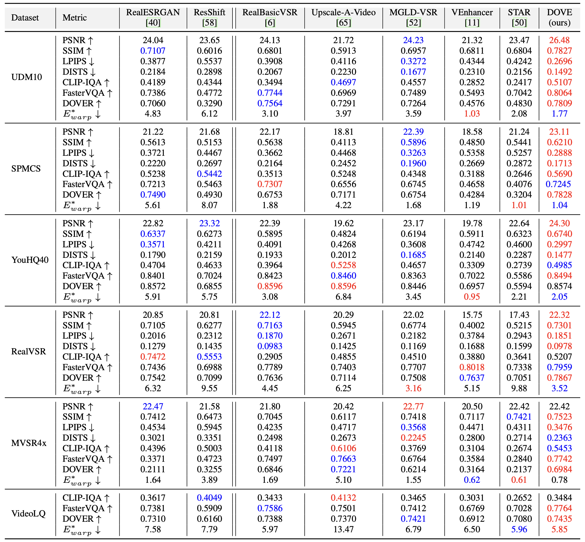
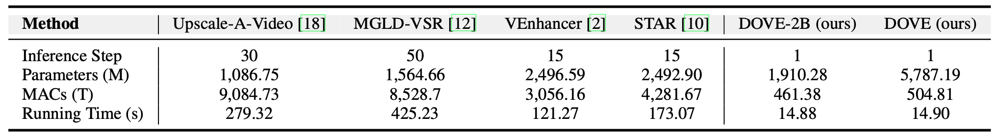
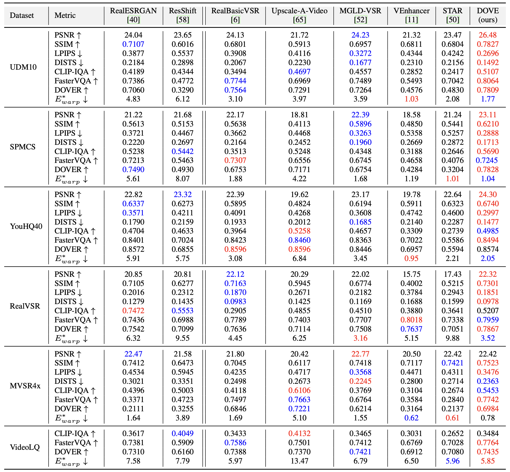
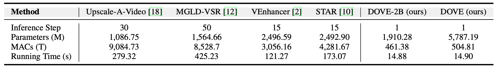

- Quantitative Results (Tab. 2 of the main paper)

- Complexity Comparison (Tab. 2 of the supplementary material)

Diffusion models have demonstrated promising performance in real-world video super-resolution (VSR). However, the dozens of sampling steps they require, make inference extremely slow. Sampling acceleration techniques, particularly single-step, provide a potential solution. Nonetheless, achieving one step in VSR remains challenging, due to the high training overhead on video data and stringent fidelity demands. To tackle the above issues, we propose DOVE, an efficient one-step diffusion model for real-world VSR. DOVE is obtained by fine-tuning a pretrained video diffusion model (i.e., CogVideoX). To effectively train DOVE, we introduce the latent–pixel training strategy. The strategy employs a two-stage scheme to gradually adapt the model to the video super-resolution task. Meanwhile, we design a video processing pipeline to construct a high-quality dataset tailored for VSR, termed HQ-VSR. Fine-tuning on this dataset further enhances the restoration capability of DOVE. Extensive experiments show that DOVE exhibits comparable or superior performance to multi-step diffusion-based VSR methods. It also offers outstanding inference efficiency, achieving up to a 28× speed-up over existing methods such as MGLD-VSR.

Our method performs one-step sampling to reconstruct high-resolution (HR) videos (xsr) from low-resolution (LR) inputs (xlr). To enable effective training, we adopt a two-stage latent-pixel training strategy. Stage-1 (latent-space): Minimize the difference between the predicted and HR latents, allowing the model to learn one-step LR-to-HR mapping. Stage-2 (pixel-space): Improve detail generation using mixed image/video training.

We design a systematic video processing pipeline to curate HQ-VSR, a high-quality dataset for video super-resolution. Starting from OpenVid-1M, we extract 2,055 diverse and high-quality videos suitable for VSR.




@inproceedings{chen2025dove,
title={DOVE: Efficient One-Step Diffusion Model for Real-World Video Super-Resolution},
author={Chen, Zheng and Zou, Zichen and Zhang, Kewei and Su, Xiongfei and Yuan, Xin and Guo, Yong and Zhang, Yulun},
booktitle={NeurIPS},
year={2025}
}